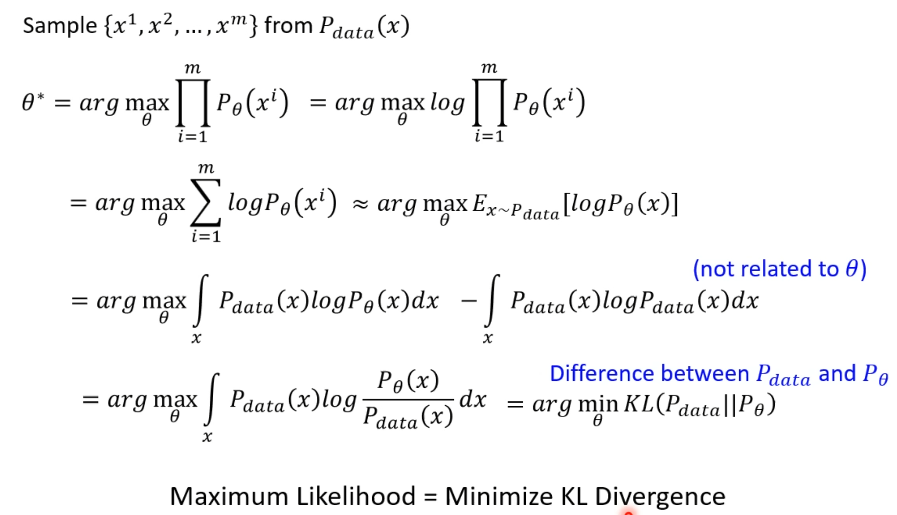

AI绘画的基石-DDPM
在AI绘画发展历程中，涌现了多种不同的生成模型和算法，其中DDPM(Denoising Diffusion Probabilistic Model)是一种比较有效的图像生成模型之一，也是最近比较热门的AI绘画模型所采用的技术。DDPM的设计巧妙，可以从高斯噪声中生成高逼真度的图像。
DDPM相对于当前诸如stable difussion等AI绘画模型来说，扮演着类似于GAN相对于StyleGAN等模型的角色
因此，DDPM并不是特指某个网络结构，而是一种通用的训练思路
这几天结合着Hung-yi Lee的视频对DDPM的优化目标推导过程进行了梳理，在此记录下，以下是正文内容。
最大化似然函数可以等价于最小化KL散度，因此在生成模型(VAE, DM, Flow)中，目标函数通常使用最大似然函数

VAE的目标是最大化$logP_\theta{(x)}$，而$logP_\theta{(x)}$有下界，所以上述目标等价于最大化这个下界。
下界推导：
在VAE中，$q(z|x)$对应Encoder，也就是在给定输入的训练集x的情况下，得到一个隐向量z。
DDPM要优化的目标函数和VAE是类似的，当DDPM的时间步为1时，就和VAE一致了
这个下界可以继续推导：
也就是说，最初的优化目标可以转换成maxmize如下目标：
在DDPM中，Encoder的目标是在给定当前时间步t下的$x_t$的情况下，得到下一个时间步t+1下的$x_{t+1}$，总计T个时间步。
DDPM的Encoder(扩散过程)要做的事情就是将$x_0$转换到$x_T$，类似VAE中的Encoder将$x$转换到$z$的过程。
不同之处在于，DDPM的Encoder并不含有可学习的参数(Encoder扩散过程没有可学习参数，Decoder去噪过程才有)
事实上，这个过程逻辑上包含T个子过程，其中的${\beta_i}_{i=1,…,T}$是事先定义好的。
并且，这些子过程可以被合并为一个总的过程，因此可以说，将$x_0$转换到$x_T$这件事情$q(x_t|x_0)$是可以一步到位的
即
$$
x_t=\sqrt{\overline\alpha_t}x_0+\sqrt{1-\overline\alpha_t}\epsilon
$$
现在继续转换优化目标。
由于目前只知道类似$q(x_t|x_m), m \lt t$是可以求解的(即前向扩散过程，直接将$x_m$加上高斯噪声就能得到$x_t$)，但DDPM的目标函数中的$q(x_{t-1}|x_x,x_0)$是没有办法直接求解的，因此需要对其做进一步转换：
通过上述转换，使得$q(x_{t-1}|x_x,x_0)$可以用3个已知的高斯分布来表示
可以对$q(x_{t-1}|x_x,x_0)$转换后的结果做进一步推导：
可以看到，$q(x_{t-1}|x_x,x_0)$同样服从高斯分布
因此，下图中红色框内的KL散度其实是两个高斯分布之间的距离(有现成公式，只需要使用两个高斯分布的均值和方差进行计算)
在实际优化时，并不需要直接计算这个KL散度，因为$q(x_{t-1}|x_x,x_0)$的均值和方差是固定的，如果固定住$P(x_{t-1}|x_t)$的方差，那么只需要让后者的均值与前者的均值越接近越好(假设不考虑方差的变化，固定住)，而后者$P(x_{t-1}|x_t)$正对应Decoder去噪的过程，这一步可以利用神经网络进行学习
上图红色框内的$q(x_t|x_0)$是已知的前向扩散过程：
在Decoder去噪网络学习$P(x_{t-1}|x_t)$时，目标便是将其预测的分布的均值与$q(x_{t-1}|x_x,x_0)$的均值(已知且固定)进行比较，使得两者越接近越好：
进一步地，可以对$q(x_{t-1}|x_x,x_0)$的均值做转换：
最终，$q(x_{t-1}|x_x,x_0)$的均值可以表达为：
$$
\frac1{\sqrt{\alpha_t}}(x_t-\frac{1-\alpha_t}{\sqrt{1-\overline{\alpha_t}}}\epsilon)
$$
在这个均值的表达式中，只有$\epsilon$是Decoder去噪网络真正需要去探测的，其余均为常数，这也符合去噪网络的逻辑，即探测噪声。
因此，Decoder去噪网络最终的预测算法流程如下：
$\epsilon_{\theta}(x_t,t)$意味着，去噪网络的可学习参数为$\theta$，其输入为第$t$步的图像$x_t$和步数$t$，输出为$t-1$时刻的图像$x_{t-1}$
$\sigma_t$是人为设定的，比如设定为一个关于$t$的线性序列，这一项可以引入一些随机性，关于这一点，这里引用评论区的一个解释
prediction裡加noise的概念在score-based generative model相關的paper中有提到，比較像是預測結果不應該收斂在一個特定的位置(a point in density region)，而是要在一個分布範圍(density region)。換句話說，如果每次update是得到一個向量(score function)朝向一個點，那noise就是讓這個向量(noisy score)轉換成朝向一個可能的範圍。讓結果從預測”一個固定方向”，轉成是要預測”一個固定範圍”，這只要sigma 足夠小，預測目標結果的分布範圍就會成立。Yang Song是用”Langevin dynamics”在討論這件事，另外還有進一步提到higher noise還有提升low data density region的預測結果這項功能。
也有一个直观的实验结果对比：
可以看到，在去掉$\sigma_tz$后，网络无法预测出所期望的分布。
最后，将DDPM的训练过程和采样过程总结如下：
在训练算法流程中，$\epsilon_{\theta}$是可学习的去噪网络，需要学习的参数是$\theta$，其输入是$x_t$和$t$，且有$x_t=\sqrt{\overline\alpha_t}x_0+\sqrt{1-\overline\alpha_t}\epsilon$
以上就是DDPM的基本原理，在了解了这些以后，接下来可以去看一些变种了，比如Stable Diffusion背后的Latent Diffusion Models